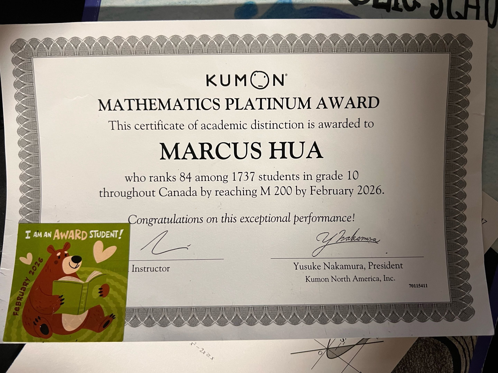
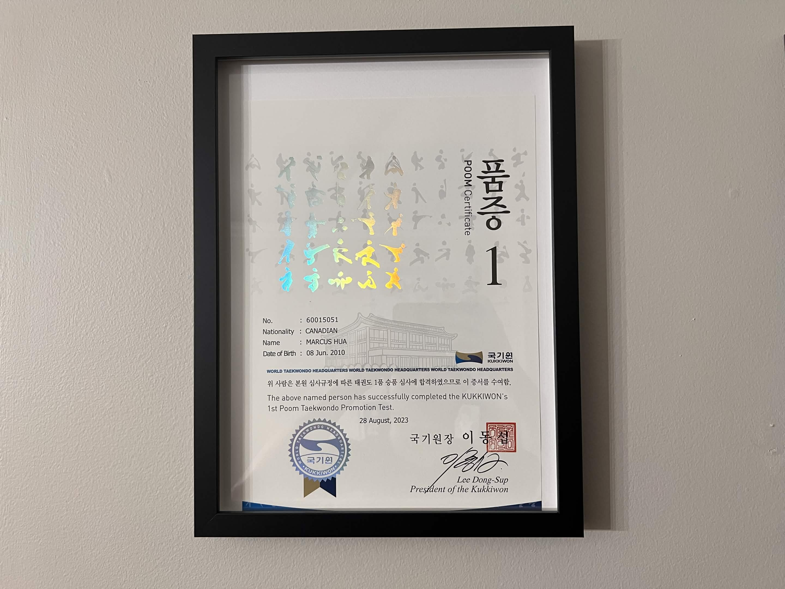
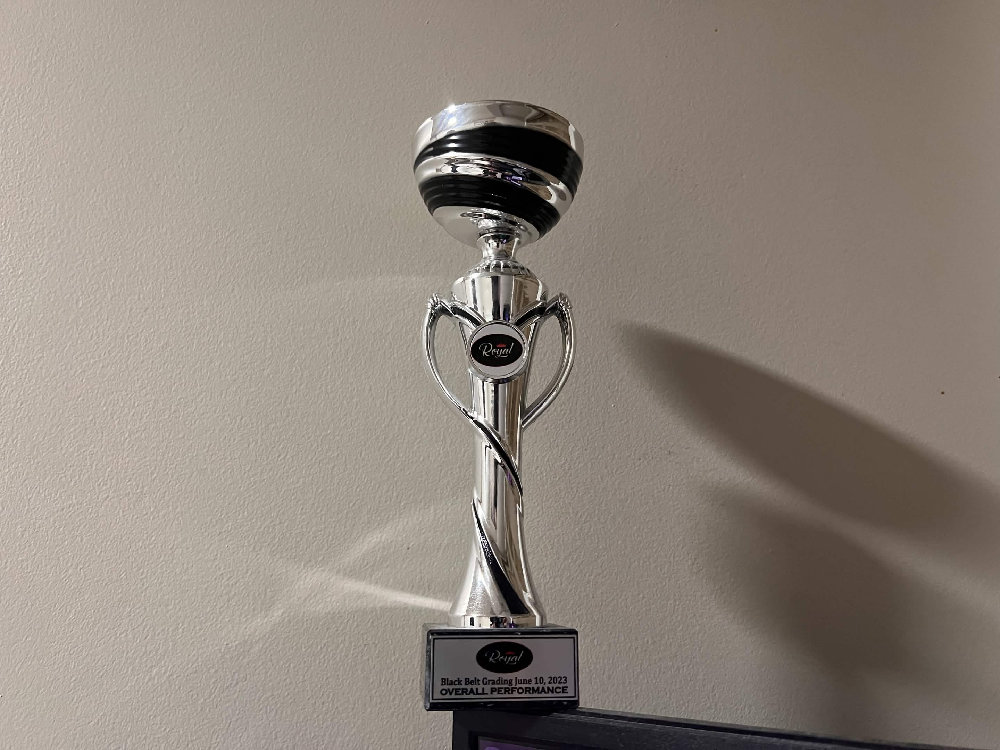

Marcus Hua
Career Portfolio
Candidate Profile Summary
Motivated High School Sophomore building an educational and technical roadmap toward field operations in accounting, corporate fractional bookkeeping, and technical analysis.
This comprehensive collection showcases applied employability framework standards, communication samples, and verified technical executions intended to showcase cross-functional business support readiness.
Table of Contents
- Assignment Title PageSec. I
- Professional Cover Letter (TYM Consulting Application)Sec. II
- Verified Graphic Resume Image AssetSec. III
- Portfolio Item: Kumon Mathematics Platinum Award (Rank 84/1737)Sec. IV
- Portfolio Item: Official Kukkiwon 1st Poom Taekwondo Black Belt Promotion CertificationSec. V
- Portfolio Item: Royal Taekwondo Black Belt Grading Overall Performance TrophySec. VI
Cover Letter
Dear [Insert Contact Name],
I am writing to express my strong interest in the full time Bookkeeper / Accountant position at TYM Consulting. I learned about this exciting opportunity through my careers teacher, Mr. Tsang, who highly recommended your organization. I am incredibly eager to join your team because I have a passion for financial analysis, organization, and helping growing firms manage daily accounting operations to ensure accurate, audit ready books.
As a student with a keen interest in mathematics and analytical problem solving, I have developed strong technical and communication skills that will allow me to thrive in this role. Through my school coursework and participation in group projects, I have learned how to manage complex datasets, solve problems critically, and maintain a high level of attention to detail, which are skills that directly align with handling general ledger entries, managing accounts payable and receivable, and performing precise bank reconciliations. Additionally, my experience in structured, fast paced environments, such as my training in Taekwondo, has taught me how to be disciplined, highly adaptable, and focused when managing tight timelines and multiple responsibilities simultaneously.
I admire TYM Consulting’s commitment to providing high quality fractional CFO and accounting services. Your focus on helping a diverse portfolio of clients navigate their financial landscapes through robust internal controls and organized reporting aligns perfectly with my own dedication to precision. I am eager to bring my energetic work ethic and analytical mindset to your firm, and I am highly motivated to quickly master your QuickBooks Online workflows and support your monthly close procedures.
I would welcome the opportunity for a personal interview to further discuss how my background and enthusiasm align with the needs of TYM Consulting. If you require any additional information, please feel free to contact me at the phone number or email address listed above. If I do not hear from you in two weeks, I will follow up to ensure my application was received. Thank you for your time and consideration, and I look forward to the possibility of meeting you soon.
Sincerely,
Marcus Hua
Resume

Portfolio Item: Kumon Mathematics Platinum Award (Rank 84/1737)

This item provides proof of my academic capabilities in advanced logical problem solving and processing data configurations. Earning my official Kumon Platinum Distinction ranking 84th out of 1,737 Canadian students by reaching the advanced M 200 metric documents my long-term technical fluency and mathematical competence under pressure.
This artifact demonstrates my ability to process numerical datasets and identify patterns accurately. Managing complex math equations systematically directly mirrors the analytical skills required to process ledger balances and handle accounts receivable sheets correctly.
These specific abilities can be seamlessly transferred to my future career goal of working as a professional corporate accountant at an advisory firm like TYM Consulting. Financial auditing requires intense focus and structural accuracy to make sure clients have audit-ready records. Furthermore, this analytical base can be applied to configuring modern workflows inside software applications like QuickBooks Online, showing that I can turn theoretical knowledge into clean, actionable business results.
Portfolio Item: Official Kukkiwon 1st Poom Taekwondo Black Belt Promotion Certification

This performance award reflects the high degree of self-discipline, time management, and internal accountability that I bring to my commitments. Progressing all the way to an internationally accredited Kukkiwon Black Belt standard while simultaneously managing a rigorous academic schedule requires deep focus and careful planning.
This milestone demonstrates my personal capacity to perform reliably under high-stress conditions. In martial arts training, consistency, stamina, and learning from failure are vital to success. I apply this exact same focus to my schoolwork, avoiding procrastination to ensure all my technical targets are met on time.
This skill sets a solid foundation for managing tight commercial schedules, such as supporting close procedures during fiscal year-ends. The accountability developed through black-belt testing ensures that I can handle multiple client accounts systematically without losing accuracy. This personal reliability translates into strong internal controls and organized workflows, giving business stakeholders absolute confidence in my accounting and auditing support.
Portfolio Item: Royal Taekwondo Black Belt Grading Overall Performance Trophy

This item represents my ability to work within collaborative, multi-tiered teams and lead others toward shared athletic and operational goals. Through coaching classes and participating in rigorous tournament training, I frequently collaborate with peers, head instructors, and younger students to execute precise drills and manage sparring lines.
This experience showcases my overall teamwork skills, which were critical during the intensive group testing required to achieve my Black Belt. Earning a black belt is not a solo effort; it relies on group testing dynamics where candidates must sync their patterns, trust their partners during high-impact breaking drills, and display mutual accountability. Preparing for tournaments and black belt testing requires intense collective effort; teammates must act as reliable sparring partners, push each other's limits safely, and provide constructive, real-time feedback to correct form and technique. Additionally, stepping into an instructional role to coach classes has sharpened my ability to explain complex movements clearly, adapt my style to different learning speeds, and motivate individuals when energy runs low.
In a professional corporate accounting environment, teamwork is essential to everyday success. Accountants do not work in a vacuum; they must collaborate with corporate staff, communicate technical data across various branches, and align with fractional CFOs during complex client audits. The leadership, adaptability, and clear verbal communication skills I have developed on the mats ensure that I can integrate smoothly into project teams, listen effectively to client concerns, and help coordinate complex financial operations smoothly and efficiently.